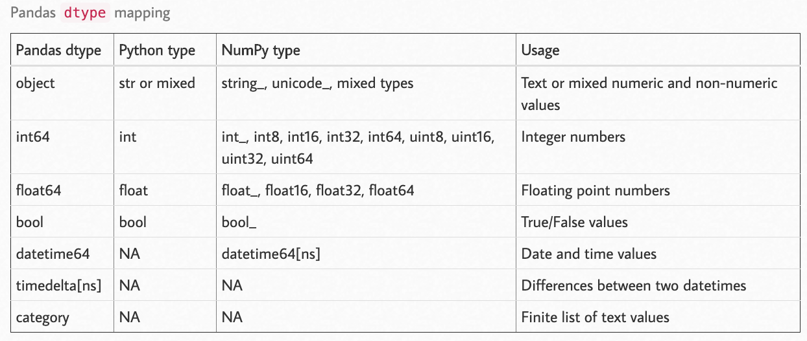

Pandas#
Methods to deal with tabular data
These methods are to replicate what
dplyrin R is capable ofThe
statsmodelscan download R datasets from https://vincentarelbundock.github.io/Rdatasets/datasets.html
Libraries#
import pandas as pd
import numpy as np
import statsmodels.api as sm
import matplotlib
%matplotlib inline
Importing/Exporting Data#
Importing:
pd.read_csv(filename): From a CSV filepd.read_table(filename): From a delimited text file (like TSV)pd.read_excel(filename): From an Excel filepd.read_sql(query, connection_object): Read from a SQL table/databasepd.read_json(json_string): Read from a JSON formatted string, URL or file.pd.read_html(url): Parses an html URL, string or file and extracts tables to a list of dataframespd.read_clipboard(): Takes the contents of your clipboard and passes it to read_table()pd.DataFrame(dict): From a dict, keys for columns names, values for data as listspd.DataFrame(list of tuples): From a list, which includes the records of each row
Exporting:
df.to_csv(filename)df.to_excel(filename)df.to_sql(table_name, connection_object)df.to_json(filename)
DEMO_DATA_DIR = '../../../RepositoryData/data/titanic/'
iris = sm.datasets.get_rdataset('iris').data
titanic = pd.read_csv(DEMO_DATA_DIR+'train.csv')
x= [(1,2,3,4),
(5,6,7,8),
(9,10,11,12)]
pd.DataFrame(x,columns=["A","B","C","D"])
| A | B | C | D | |
|---|---|---|---|---|
| 0 | 1 | 2 | 3 | 4 |
| 1 | 5 | 6 | 7 | 8 |
| 2 | 9 | 10 | 11 | 12 |
x = {"A":[1,2,3,4],
"B":[5,6,7,8],
"C":[9,10,11,12]}
pd.DataFrame(x)
| A | B | C | |
|---|---|---|---|
| 0 | 1 | 5 | 9 |
| 1 | 2 | 6 | 10 |
| 2 | 3 | 7 | 11 |
| 3 | 4 | 8 | 12 |
Note
When you have data of the columns, use dict; when you have the data of the rows, use list as the source data structures of a data frame.
Inspecting Data Frame#
df.head(n): First n rows of the DataFramedf.tail(n): Last n rows of the DataFramedf.shape: Number of rows and columnsdf.info(): Index, Datatype and Memory informationdf.describe(): Summary statistics for numerical columnss.value_counts(dropna=False): View unique values and countsdf.apply(pd.Series.value_counts): Unique values and counts for all columnsdf.columnsdf.indexdf.dtypesdf.set_index('column_name'): Set a column as the index
iris.info()
<class 'pandas.core.frame.DataFrame'>
RangeIndex: 150 entries, 0 to 149
Data columns (total 5 columns):
# Column Non-Null Count Dtype
--- ------ -------------- -----
0 Sepal.Length 150 non-null float64
1 Sepal.Width 150 non-null float64
2 Petal.Length 150 non-null float64
3 Petal.Width 150 non-null float64
4 Species 150 non-null object
dtypes: float64(4), object(1)
memory usage: 6.0+ KB
iris.describe()
| Sepal.Length | Sepal.Width | Petal.Length | Petal.Width | |
|---|---|---|---|---|
| count | 150.000000 | 150.000000 | 150.000000 | 150.000000 |
| mean | 5.843333 | 3.057333 | 3.758000 | 1.199333 |
| std | 0.828066 | 0.435866 | 1.765298 | 0.762238 |
| min | 4.300000 | 2.000000 | 1.000000 | 0.100000 |
| 25% | 5.100000 | 2.800000 | 1.600000 | 0.300000 |
| 50% | 5.800000 | 3.000000 | 4.350000 | 1.300000 |
| 75% | 6.400000 | 3.300000 | 5.100000 | 1.800000 |
| max | 7.900000 | 4.400000 | 6.900000 | 2.500000 |
print(iris.shape)
iris.head(3)
(150, 5)
| Sepal.Length | Sepal.Width | Petal.Length | Petal.Width | Species | |
|---|---|---|---|---|---|
| 0 | 5.1 | 3.5 | 1.4 | 0.2 | setosa |
| 1 | 4.9 | 3.0 | 1.4 | 0.2 | setosa |
| 2 | 4.7 | 3.2 | 1.3 | 0.2 | setosa |
titanic.tail(3)
| PassengerId | Survived | Pclass | Name | Sex | Age | SibSp | Parch | Ticket | Fare | Cabin | Embarked | |
|---|---|---|---|---|---|---|---|---|---|---|---|---|
| 888 | 889 | 0 | 3 | Johnston, Miss. Catherine Helen "Carrie" | female | NaN | 1 | 2 | W./C. 6607 | 23.45 | NaN | S |
| 889 | 890 | 1 | 1 | Behr, Mr. Karl Howell | male | 26.0 | 0 | 0 | 111369 | 30.00 | C148 | C |
| 890 | 891 | 0 | 3 | Dooley, Mr. Patrick | male | 32.0 | 0 | 0 | 370376 | 7.75 | NaN | Q |
iris['Species'].value_counts()
virginica 50
versicolor 50
setosa 50
Name: Species, dtype: int64
titanic.apply(pd.Series.value_counts)
| PassengerId | Survived | Pclass | Name | Sex | Age | SibSp | Parch | Ticket | Fare | Cabin | Embarked | |
|---|---|---|---|---|---|---|---|---|---|---|---|---|
| 0 | NaN | 549.0 | NaN | NaN | NaN | NaN | 608.0 | 678.0 | NaN | 15.0 | NaN | NaN |
| 0.42 | NaN | NaN | NaN | NaN | NaN | 1.0 | NaN | NaN | NaN | NaN | NaN | NaN |
| 0.67 | NaN | NaN | NaN | NaN | NaN | 1.0 | NaN | NaN | NaN | NaN | NaN | NaN |
| 0.75 | NaN | NaN | NaN | NaN | NaN | 2.0 | NaN | NaN | NaN | NaN | NaN | NaN |
| 0.83 | NaN | NaN | NaN | NaN | NaN | 2.0 | NaN | NaN | NaN | NaN | NaN | NaN |
| ... | ... | ... | ... | ... | ... | ... | ... | ... | ... | ... | ... | ... |
| del Carlo, Mr. Sebastiano | NaN | NaN | NaN | 1.0 | NaN | NaN | NaN | NaN | NaN | NaN | NaN | NaN |
| female | NaN | NaN | NaN | NaN | 314.0 | NaN | NaN | NaN | NaN | NaN | NaN | NaN |
| male | NaN | NaN | NaN | NaN | 577.0 | NaN | NaN | NaN | NaN | NaN | NaN | NaN |
| van Billiard, Mr. Austin Blyler | NaN | NaN | NaN | 1.0 | NaN | NaN | NaN | NaN | NaN | NaN | NaN | NaN |
| van Melkebeke, Mr. Philemon | NaN | NaN | NaN | 1.0 | NaN | NaN | NaN | NaN | NaN | NaN | NaN | NaN |
2848 rows × 12 columns
print(iris.columns)
print(titanic.columns)
print(iris.index)
Index(['Sepal.Length', 'Sepal.Width', 'Petal.Length', 'Petal.Width',
'Species'],
dtype='object')
Index(['PassengerId', 'Survived', 'Pclass', 'Name', 'Sex', 'Age', 'SibSp',
'Parch', 'Ticket', 'Fare', 'Cabin', 'Embarked'],
dtype='object')
RangeIndex(start=0, stop=150, step=1)
print(iris.dtypes)
print(titanic.dtypes)
Sepal.Length float64
Sepal.Width float64
Petal.Length float64
Petal.Width float64
Species object
dtype: object
PassengerId int64
Survived int64
Pclass int64
Name object
Sex object
Age float64
SibSp int64
Parch int64
Ticket object
Fare float64
Cabin object
Embarked object
dtype: object
Basic Functions#
## DataFrame attributes
iris.shape
iris.columns
iris.index
iris.info()
iris.describe()
iris.dtypes # check column data types
<class 'pandas.core.frame.DataFrame'>
RangeIndex: 150 entries, 0 to 149
Data columns (total 5 columns):
# Column Non-Null Count Dtype
--- ------ -------------- -----
0 Sepal.Length 150 non-null float64
1 Sepal.Width 150 non-null float64
2 Petal.Length 150 non-null float64
3 Petal.Width 150 non-null float64
4 Species 150 non-null object
dtypes: float64(4), object(1)
memory usage: 6.0+ KB
Sepal.Length float64
Sepal.Width float64
Petal.Length float64
Petal.Width float64
Species object
dtype: object
Subsetting Data Frame#
df[col]: Returns column with label col as Seriesdf[[col1, col2]]: Returns columns as a new DataFrames.iloc[0]: Selection by positions.loc['index_one']: Selection by indexdf.iloc[0,:]: First rowdf.iloc[0,0]: First element of first column
iris.loc[:5, 'Species'] # first six rows of 'Species' column
0 setosa
1 setosa
2 setosa
3 setosa
4 setosa
5 setosa
Name: Species, dtype: object
iris.iloc[:5, 4] # same as above
0 setosa
1 setosa
2 setosa
3 setosa
4 setosa
Name: Species, dtype: object
Exploration#
How to perform the key functions provided in R dplyr?
dplyrKey Verbsfilter()select()mutate()arrange()summarize()group_by()
NA Values#
Functions to take care of NA values:
df.isnull()df.notnull()df.dropna(): Drop rows with null valuesdf.dropna(axis=1): Drop columns with null valuesdf.dropna(axis=1, thresh=n): Drop all columns have less than n non-valuesdf.fillna(x): Replaces all null values withxs.fillna(s.mean()): Replace the null values of a Series with its mean score
Quick check of the null values in each column
titanic.isnull().sum()
PassengerId 0
Survived 0
Pclass 0
Name 0
Sex 0
Age 177
SibSp 0
Parch 0
Ticket 0
Fare 0
Cabin 687
Embarked 2
dtype: int64
titanic.dropna(axis=1, thresh=600)
| PassengerId | Survived | Pclass | Name | Sex | Age | SibSp | Parch | Ticket | Fare | Embarked | |
|---|---|---|---|---|---|---|---|---|---|---|---|
| 0 | 1 | 0 | 3 | Braund, Mr. Owen Harris | male | 22.0 | 1 | 0 | A/5 21171 | 7.2500 | S |
| 1 | 2 | 1 | 1 | Cumings, Mrs. John Bradley (Florence Briggs Th... | female | 38.0 | 1 | 0 | PC 17599 | 71.2833 | C |
| 2 | 3 | 1 | 3 | Heikkinen, Miss. Laina | female | 26.0 | 0 | 0 | STON/O2. 3101282 | 7.9250 | S |
| 3 | 4 | 1 | 1 | Futrelle, Mrs. Jacques Heath (Lily May Peel) | female | 35.0 | 1 | 0 | 113803 | 53.1000 | S |
| 4 | 5 | 0 | 3 | Allen, Mr. William Henry | male | 35.0 | 0 | 0 | 373450 | 8.0500 | S |
| ... | ... | ... | ... | ... | ... | ... | ... | ... | ... | ... | ... |
| 886 | 887 | 0 | 2 | Montvila, Rev. Juozas | male | 27.0 | 0 | 0 | 211536 | 13.0000 | S |
| 887 | 888 | 1 | 1 | Graham, Miss. Margaret Edith | female | 19.0 | 0 | 0 | 112053 | 30.0000 | S |
| 888 | 889 | 0 | 3 | Johnston, Miss. Catherine Helen "Carrie" | female | NaN | 1 | 2 | W./C. 6607 | 23.4500 | S |
| 889 | 890 | 1 | 1 | Behr, Mr. Karl Howell | male | 26.0 | 0 | 0 | 111369 | 30.0000 | C |
| 890 | 891 | 0 | 3 | Dooley, Mr. Patrick | male | 32.0 | 0 | 0 | 370376 | 7.7500 | Q |
891 rows × 11 columns
titanic.notnull().sum()
PassengerId 891
Survived 891
Pclass 891
Name 891
Sex 891
Age 714
SibSp 891
Parch 891
Ticket 891
Fare 891
Cabin 204
Embarked 889
dtype: int64
Converting Data Types#
s.astype(float): Convert a Series into afloattype
iris.dtypes
Sepal.Length float64
Sepal.Width float64
Petal.Length float64
Petal.Width float64
Species object
dtype: object
iris['Species']=iris['Species'].astype('category')
iris.dtypes
#iris.value_counts(iris['Species']).plot.bar()
Sepal.Length float64
Sepal.Width float64
Petal.Length float64
Petal.Width float64
Species category
dtype: object
Pandas-supported Data Types#

(source)
Transformation#
s.replace(X, Y)
titanic.head()
titanic.value_counts(titanic['Survived']).plot.bar()
titanic.columns
titanic.groupby(['Sex','Pclass']).mean()
titanic[titanic['Age']<18].groupby(['Sex','Pclass']).mean()
| PassengerId | Survived | Age | SibSp | Parch | Fare | ||
|---|---|---|---|---|---|---|---|
| Sex | Pclass | ||||||
| female | 1 | 525.375000 | 0.875000 | 14.125000 | 0.500000 | 0.875000 | 104.083337 |
| 2 | 369.250000 | 1.000000 | 8.333333 | 0.583333 | 1.083333 | 26.241667 | |
| 3 | 374.942857 | 0.542857 | 8.428571 | 1.571429 | 1.057143 | 18.727977 | |
| male | 1 | 526.500000 | 1.000000 | 8.230000 | 0.500000 | 2.000000 | 116.072900 |
| 2 | 527.818182 | 0.818182 | 4.757273 | 0.727273 | 1.000000 | 25.659473 | |
| 3 | 437.953488 | 0.232558 | 9.963256 | 2.069767 | 1.000000 | 22.752523 |
filter()#
## filter
iris[iris['Sepal.Length']>5]
| Sepal.Length | Sepal.Width | Petal.Length | Petal.Width | Species | |
|---|---|---|---|---|---|
| 0 | 5.1 | 3.5 | 1.4 | 0.2 | setosa |
| 5 | 5.4 | 3.9 | 1.7 | 0.4 | setosa |
| 10 | 5.4 | 3.7 | 1.5 | 0.2 | setosa |
| 14 | 5.8 | 4.0 | 1.2 | 0.2 | setosa |
| 15 | 5.7 | 4.4 | 1.5 | 0.4 | setosa |
| ... | ... | ... | ... | ... | ... |
| 145 | 6.7 | 3.0 | 5.2 | 2.3 | virginica |
| 146 | 6.3 | 2.5 | 5.0 | 1.9 | virginica |
| 147 | 6.5 | 3.0 | 5.2 | 2.0 | virginica |
| 148 | 6.2 | 3.4 | 5.4 | 2.3 | virginica |
| 149 | 5.9 | 3.0 | 5.1 | 1.8 | virginica |
118 rows × 5 columns
Note
When there are more than one filtering condition, put the conditions in parentheses.
iris[(iris['Sepal.Length']>4) & (iris['Sepal.Width']>5)]
| Sepal.Length | Sepal.Width | Petal.Length | Petal.Width | Species |
|---|
iris.query('`Sepal.Length`>5')
| Sepal.Length | Sepal.Width | Petal.Length | Petal.Width | Species | |
|---|---|---|---|---|---|
| 0 | 5.1 | 3.5 | 1.4 | 0.2 | setosa |
| 5 | 5.4 | 3.9 | 1.7 | 0.4 | setosa |
| 10 | 5.4 | 3.7 | 1.5 | 0.2 | setosa |
| 14 | 5.8 | 4.0 | 1.2 | 0.2 | setosa |
| 15 | 5.7 | 4.4 | 1.5 | 0.4 | setosa |
| ... | ... | ... | ... | ... | ... |
| 145 | 6.7 | 3.0 | 5.2 | 2.3 | virginica |
| 146 | 6.3 | 2.5 | 5.0 | 1.9 | virginica |
| 147 | 6.5 | 3.0 | 5.2 | 2.0 | virginica |
| 148 | 6.2 | 3.4 | 5.4 | 2.3 | virginica |
| 149 | 5.9 | 3.0 | 5.1 | 1.8 | virginica |
118 rows × 5 columns
iris[(iris['Sepal.Length']>5) & (iris['Sepal.Width']>4)]
| Sepal.Length | Sepal.Width | Petal.Length | Petal.Width | Species | |
|---|---|---|---|---|---|
| 15 | 5.7 | 4.4 | 1.5 | 0.4 | setosa |
| 32 | 5.2 | 4.1 | 1.5 | 0.1 | setosa |
| 33 | 5.5 | 4.2 | 1.4 | 0.2 | setosa |
arrange()#
iris.sort_values(['Species','Sepal.Length'], ascending=[False,True])
| Sepal.Length | Sepal.Width | Petal.Length | Petal.Width | Species | |
|---|---|---|---|---|---|
| 106 | 4.9 | 2.5 | 4.5 | 1.7 | virginica |
| 121 | 5.6 | 2.8 | 4.9 | 2.0 | virginica |
| 113 | 5.7 | 2.5 | 5.0 | 2.0 | virginica |
| 101 | 5.8 | 2.7 | 5.1 | 1.9 | virginica |
| 114 | 5.8 | 2.8 | 5.1 | 2.4 | virginica |
| ... | ... | ... | ... | ... | ... |
| 33 | 5.5 | 4.2 | 1.4 | 0.2 | setosa |
| 36 | 5.5 | 3.5 | 1.3 | 0.2 | setosa |
| 15 | 5.7 | 4.4 | 1.5 | 0.4 | setosa |
| 18 | 5.7 | 3.8 | 1.7 | 0.3 | setosa |
| 14 | 5.8 | 4.0 | 1.2 | 0.2 | setosa |
150 rows × 5 columns
select()#
## select
iris[['Sepal.Length', 'Species']]
| Sepal.Length | Species | |
|---|---|---|
| 0 | 5.1 | setosa |
| 1 | 4.9 | setosa |
| 2 | 4.7 | setosa |
| 3 | 4.6 | setosa |
| 4 | 5.0 | setosa |
| ... | ... | ... |
| 145 | 6.7 | virginica |
| 146 | 6.3 | virginica |
| 147 | 6.5 | virginica |
| 148 | 6.2 | virginica |
| 149 | 5.9 | virginica |
150 rows × 2 columns
## deselect columns
iris.drop(['Sepal.Length'], axis=1).head()
| Sepal.Width | Petal.Length | Petal.Width | Species | |
|---|---|---|---|---|
| 0 | 3.5 | 1.4 | 0.2 | setosa |
| 1 | 3.0 | 1.4 | 0.2 | setosa |
| 2 | 3.2 | 1.3 | 0.2 | setosa |
| 3 | 3.1 | 1.5 | 0.2 | setosa |
| 4 | 3.6 | 1.4 | 0.2 | setosa |
iris.filter(['Species','Sepal.Length'])
| Species | Sepal.Length | |
|---|---|---|
| 0 | setosa | 5.1 |
| 1 | setosa | 4.9 |
| 2 | setosa | 4.7 |
| 3 | setosa | 4.6 |
| 4 | setosa | 5.0 |
| ... | ... | ... |
| 145 | virginica | 6.7 |
| 146 | virginica | 6.3 |
| 147 | virginica | 6.5 |
| 148 | virginica | 6.2 |
| 149 | virginica | 5.9 |
150 rows × 2 columns
iris[['Species','Sepal.Length']]
| Species | Sepal.Length | |
|---|---|---|
| 0 | setosa | 5.1 |
| 1 | setosa | 4.9 |
| 2 | setosa | 4.7 |
| 3 | setosa | 4.6 |
| 4 | setosa | 5.0 |
| ... | ... | ... |
| 145 | virginica | 6.7 |
| 146 | virginica | 6.3 |
| 147 | virginica | 6.5 |
| 148 | virginica | 6.2 |
| 149 | virginica | 5.9 |
150 rows × 2 columns
## extract one particular column
sepal_length = iris['Sepal.Length']
type(sepal_length)
pandas.core.series.Series
mutate()#
## mutate
iris['Species_new'] = iris['Species'].apply(lambda x: len(x))
iris['Species_initial'] = iris['Species'].apply(lambda x: x[:2].upper())
iris
| Sepal.Length | Sepal.Width | Petal.Length | Petal.Width | Species | Species_new | Species_initial | |
|---|---|---|---|---|---|---|---|
| 0 | 5.1 | 3.5 | 1.4 | 0.2 | setosa | 6 | SE |
| 1 | 4.9 | 3.0 | 1.4 | 0.2 | setosa | 6 | SE |
| 2 | 4.7 | 3.2 | 1.3 | 0.2 | setosa | 6 | SE |
| 3 | 4.6 | 3.1 | 1.5 | 0.2 | setosa | 6 | SE |
| 4 | 5.0 | 3.6 | 1.4 | 0.2 | setosa | 6 | SE |
| ... | ... | ... | ... | ... | ... | ... | ... |
| 145 | 6.7 | 3.0 | 5.2 | 2.3 | virginica | 9 | VI |
| 146 | 6.3 | 2.5 | 5.0 | 1.9 | virginica | 9 | VI |
| 147 | 6.5 | 3.0 | 5.2 | 2.0 | virginica | 9 | VI |
| 148 | 6.2 | 3.4 | 5.4 | 2.3 | virginica | 9 | VI |
| 149 | 5.9 | 3.0 | 5.1 | 1.8 | virginica | 9 | VI |
150 rows × 7 columns
## mutate alternative 2
iris.assign(Specias_initial2 = iris['Species'].apply(lambda x: x.upper()))
| Sepal.Length | Sepal.Width | Petal.Length | Petal.Width | Species | Species_new | Species_initial | Specias_initial2 | |
|---|---|---|---|---|---|---|---|---|
| 0 | 5.1 | 3.5 | 1.4 | 0.2 | setosa | 6 | SE | SETOSA |
| 1 | 4.9 | 3.0 | 1.4 | 0.2 | setosa | 6 | SE | SETOSA |
| 2 | 4.7 | 3.2 | 1.3 | 0.2 | setosa | 6 | SE | SETOSA |
| 3 | 4.6 | 3.1 | 1.5 | 0.2 | setosa | 6 | SE | SETOSA |
| 4 | 5.0 | 3.6 | 1.4 | 0.2 | setosa | 6 | SE | SETOSA |
| ... | ... | ... | ... | ... | ... | ... | ... | ... |
| 145 | 6.7 | 3.0 | 5.2 | 2.3 | virginica | 9 | VI | VIRGINICA |
| 146 | 6.3 | 2.5 | 5.0 | 1.9 | virginica | 9 | VI | VIRGINICA |
| 147 | 6.5 | 3.0 | 5.2 | 2.0 | virginica | 9 | VI | VIRGINICA |
| 148 | 6.2 | 3.4 | 5.4 | 2.3 | virginica | 9 | VI | VIRGINICA |
| 149 | 5.9 | 3.0 | 5.1 | 1.8 | virginica | 9 | VI | VIRGINICA |
150 rows × 8 columns
apply(), mutate_if()#
df.apply(np.mean): Apply a function to all columnsdf.apply(np.max,axis=1): Apply a function to each row
Note
When apply() functions to the data frame, the axis=1 refers to row mutation and axis=0 refers to column mutation. This is very counter-intuitive for R users.
iris.head(10)
| Sepal.Length | Sepal.Width | Petal.Length | Petal.Width | Species | Species_new | Species_initial | |
|---|---|---|---|---|---|---|---|
| 0 | 5.1 | 3.5 | 1.4 | 0.2 | setosa | 6 | SE |
| 1 | 4.9 | 3.0 | 1.4 | 0.2 | setosa | 6 | SE |
| 2 | 4.7 | 3.2 | 1.3 | 0.2 | setosa | 6 | SE |
| 3 | 4.6 | 3.1 | 1.5 | 0.2 | setosa | 6 | SE |
| 4 | 5.0 | 3.6 | 1.4 | 0.2 | setosa | 6 | SE |
| 5 | 5.4 | 3.9 | 1.7 | 0.4 | setosa | 6 | SE |
| 6 | 4.6 | 3.4 | 1.4 | 0.3 | setosa | 6 | SE |
| 7 | 5.0 | 3.4 | 1.5 | 0.2 | setosa | 6 | SE |
| 8 | 4.4 | 2.9 | 1.4 | 0.2 | setosa | 6 | SE |
| 9 | 4.9 | 3.1 | 1.5 | 0.1 | setosa | 6 | SE |
iris[['Sepal.Width','Petal.Width']].apply(np.sum, axis=1).head(10)
0 3.7
1 3.2
2 3.4
3 3.3
4 3.8
5 4.3
6 3.7
7 3.6
8 3.1
9 3.2
dtype: float64
group_by() and summarize()#
iris.groupby(by='Species').mean()
| Sepal.Length | Sepal.Width | Petal.Length | Petal.Width | |
|---|---|---|---|---|
| Species | ||||
| setosa | 5.006 | 3.428 | 1.462 | 0.246 |
| versicolor | 5.936 | 2.770 | 4.260 | 1.326 |
| virginica | 6.588 | 2.974 | 5.552 | 2.026 |
iris.filter(['Species','Sepal.Length']).groupby('Species').agg({'Sepal.Length':['mean','count','std']})
| Sepal.Length | |||
|---|---|---|---|
| mean | count | std | |
| Species | |||
| setosa | 5.006 | 50 | 0.352490 |
| versicolor | 5.936 | 50 | 0.516171 |
| virginica | 6.588 | 50 | 0.635880 |
titanic.head()
| PassengerId | Survived | Pclass | Name | Sex | Age | SibSp | Parch | Ticket | Fare | Cabin | Embarked | |
|---|---|---|---|---|---|---|---|---|---|---|---|---|
| 0 | 1 | 0 | 3 | Braund, Mr. Owen Harris | male | 22.0 | 1 | 0 | A/5 21171 | 7.2500 | NaN | S |
| 1 | 2 | 1 | 1 | Cumings, Mrs. John Bradley (Florence Briggs Th... | female | 38.0 | 1 | 0 | PC 17599 | 71.2833 | C85 | C |
| 2 | 3 | 1 | 3 | Heikkinen, Miss. Laina | female | 26.0 | 0 | 0 | STON/O2. 3101282 | 7.9250 | NaN | S |
| 3 | 4 | 1 | 1 | Futrelle, Mrs. Jacques Heath (Lily May Peel) | female | 35.0 | 1 | 0 | 113803 | 53.1000 | C123 | S |
| 4 | 5 | 0 | 3 | Allen, Mr. William Henry | male | 35.0 | 0 | 0 | 373450 | 8.0500 | NaN | S |
titanic.groupby(['Pclass','Sex']).agg(np.sum)
| PassengerId | Survived | Age | SibSp | Parch | Fare | ||
|---|---|---|---|---|---|---|---|
| Pclass | Sex | ||||||
| 1 | female | 44106 | 91 | 2942.00 | 52 | 43 | 9975.8250 |
| male | 55599 | 45 | 4169.42 | 38 | 34 | 8201.5875 | |
| 2 | female | 33676 | 70 | 2125.50 | 37 | 46 | 1669.7292 |
| male | 48380 | 17 | 3043.33 | 37 | 24 | 2132.1125 | |
| 3 | female | 57561 | 72 | 2218.50 | 129 | 115 | 2321.1086 |
| male | 158064 | 47 | 6706.42 | 173 | 78 | 4393.5865 |
titanic.pivot_table(index=['Pclass','Sex'], values=['Survived'], aggfunc=np.sum)
| Survived | ||
|---|---|---|
| Pclass | Sex | |
| 1 | female | 91 |
| male | 45 | |
| 2 | female | 70 |
| male | 17 | |
| 3 | female | 72 |
| male | 47 |
rename()#
iris
iris.columns
Index(['Sepal.Length', 'Sepal.Width', 'Petal.Length', 'Petal.Width', 'Species',
'Species_new', 'Species_initial'],
dtype='object')
Selective renaming column names
iris = iris.rename(columns={'Sepal.Length':'SLen'})
iris
| SLen | Sepal.Width | Petal.Length | Petal.Width | Species | Species_new | Species_initial | |
|---|---|---|---|---|---|---|---|
| 0 | 5.1 | 3.5 | 1.4 | 0.2 | setosa | 6 | SE |
| 1 | 4.9 | 3.0 | 1.4 | 0.2 | setosa | 6 | SE |
| 2 | 4.7 | 3.2 | 1.3 | 0.2 | setosa | 6 | SE |
| 3 | 4.6 | 3.1 | 1.5 | 0.2 | setosa | 6 | SE |
| 4 | 5.0 | 3.6 | 1.4 | 0.2 | setosa | 6 | SE |
| ... | ... | ... | ... | ... | ... | ... | ... |
| 145 | 6.7 | 3.0 | 5.2 | 2.3 | virginica | 9 | VI |
| 146 | 6.3 | 2.5 | 5.0 | 1.9 | virginica | 9 | VI |
| 147 | 6.5 | 3.0 | 5.2 | 2.0 | virginica | 9 | VI |
| 148 | 6.2 | 3.4 | 5.4 | 2.3 | virginica | 9 | VI |
| 149 | 5.9 | 3.0 | 5.1 | 1.8 | virginica | 9 | VI |
150 rows × 7 columns
Massive renaming column names
iris.rename(columns=lambda x: 'XX'+x)
| XXSLen | XXSepal.Width | XXPetal.Length | XXPetal.Width | XXSpecies | XXSpecies_new | XXSpecies_initial | |
|---|---|---|---|---|---|---|---|
| 0 | 5.1 | 3.5 | 1.4 | 0.2 | setosa | 6 | SE |
| 1 | 4.9 | 3.0 | 1.4 | 0.2 | setosa | 6 | SE |
| 2 | 4.7 | 3.2 | 1.3 | 0.2 | setosa | 6 | SE |
| 3 | 4.6 | 3.1 | 1.5 | 0.2 | setosa | 6 | SE |
| 4 | 5.0 | 3.6 | 1.4 | 0.2 | setosa | 6 | SE |
| ... | ... | ... | ... | ... | ... | ... | ... |
| 145 | 6.7 | 3.0 | 5.2 | 2.3 | virginica | 9 | VI |
| 146 | 6.3 | 2.5 | 5.0 | 1.9 | virginica | 9 | VI |
| 147 | 6.5 | 3.0 | 5.2 | 2.0 | virginica | 9 | VI |
| 148 | 6.2 | 3.4 | 5.4 | 2.3 | virginica | 9 | VI |
| 149 | 5.9 | 3.0 | 5.1 | 1.8 | virginica | 9 | VI |
150 rows × 7 columns
titanic.head(10)
| PassengerId | Survived | Pclass | Name | Sex | Age | SibSp | Parch | Ticket | Fare | Cabin | Embarked | |
|---|---|---|---|---|---|---|---|---|---|---|---|---|
| 0 | 1 | 0 | 3 | Braund, Mr. Owen Harris | male | 22.0 | 1 | 0 | A/5 21171 | 7.2500 | NaN | S |
| 1 | 2 | 1 | 1 | Cumings, Mrs. John Bradley (Florence Briggs Th... | female | 38.0 | 1 | 0 | PC 17599 | 71.2833 | C85 | C |
| 2 | 3 | 1 | 3 | Heikkinen, Miss. Laina | female | 26.0 | 0 | 0 | STON/O2. 3101282 | 7.9250 | NaN | S |
| 3 | 4 | 1 | 1 | Futrelle, Mrs. Jacques Heath (Lily May Peel) | female | 35.0 | 1 | 0 | 113803 | 53.1000 | C123 | S |
| 4 | 5 | 0 | 3 | Allen, Mr. William Henry | male | 35.0 | 0 | 0 | 373450 | 8.0500 | NaN | S |
| 5 | 6 | 0 | 3 | Moran, Mr. James | male | NaN | 0 | 0 | 330877 | 8.4583 | NaN | Q |
| 6 | 7 | 0 | 1 | McCarthy, Mr. Timothy J | male | 54.0 | 0 | 0 | 17463 | 51.8625 | E46 | S |
| 7 | 8 | 0 | 3 | Palsson, Master. Gosta Leonard | male | 2.0 | 3 | 1 | 349909 | 21.0750 | NaN | S |
| 8 | 9 | 1 | 3 | Johnson, Mrs. Oscar W (Elisabeth Vilhelmina Berg) | female | 27.0 | 0 | 2 | 347742 | 11.1333 | NaN | S |
| 9 | 10 | 1 | 2 | Nasser, Mrs. Nicholas (Adele Achem) | female | 14.0 | 1 | 0 | 237736 | 30.0708 | NaN | C |
titanic.set_index('Name').rename(index=lambda x:x.replace(' ',"_").upper())
| PassengerId | Survived | Pclass | Sex | Age | SibSp | Parch | Ticket | Fare | Cabin | Embarked | |
|---|---|---|---|---|---|---|---|---|---|---|---|
| Name | |||||||||||
| BRAUND,_MR._OWEN_HARRIS | 1 | 0 | 3 | male | 22.0 | 1 | 0 | A/5 21171 | 7.2500 | NaN | S |
| CUMINGS,_MRS._JOHN_BRADLEY_(FLORENCE_BRIGGS_THAYER) | 2 | 1 | 1 | female | 38.0 | 1 | 0 | PC 17599 | 71.2833 | C85 | C |
| HEIKKINEN,_MISS._LAINA | 3 | 1 | 3 | female | 26.0 | 0 | 0 | STON/O2. 3101282 | 7.9250 | NaN | S |
| FUTRELLE,_MRS._JACQUES_HEATH_(LILY_MAY_PEEL) | 4 | 1 | 1 | female | 35.0 | 1 | 0 | 113803 | 53.1000 | C123 | S |
| ALLEN,_MR._WILLIAM_HENRY | 5 | 0 | 3 | male | 35.0 | 0 | 0 | 373450 | 8.0500 | NaN | S |
| ... | ... | ... | ... | ... | ... | ... | ... | ... | ... | ... | ... |
| MONTVILA,_REV._JUOZAS | 887 | 0 | 2 | male | 27.0 | 0 | 0 | 211536 | 13.0000 | NaN | S |
| GRAHAM,_MISS._MARGARET_EDITH | 888 | 1 | 1 | female | 19.0 | 0 | 0 | 112053 | 30.0000 | B42 | S |
| JOHNSTON,_MISS._CATHERINE_HELEN_"CARRIE" | 889 | 0 | 3 | female | NaN | 1 | 2 | W./C. 6607 | 23.4500 | NaN | S |
| BEHR,_MR._KARL_HOWELL | 890 | 1 | 1 | male | 26.0 | 0 | 0 | 111369 | 30.0000 | C148 | C |
| DOOLEY,_MR._PATRICK | 891 | 0 | 3 | male | 32.0 | 0 | 0 | 370376 | 7.7500 | NaN | Q |
891 rows × 11 columns
Join/Combine Data Frames#
df1.append(df2): Add the rows in df1 to the end of df2 (columns should be identical) (rbind()in R)pd.concat([df1, df2],axis=1): Add the columns in df1 to the end of df2 (rows should be identical) (cbind()in R)df1.join(df2,on=col1,how='inner'): SQL-style join the columns in df1 with the columns on df2 where the rows for col have identical values. ‘how’ can be one of ‘left’, ‘right’, ‘outer’, ‘inner’
Statistics#
df.describe(): Summary statistics for numerical columnsdf.mean(): Returns the mean of all columnsdf.corr(): Returns the correlation between columns in a DataFramedf.count(): Returns the number of non-null values in each DataFrame columndf.max(): Returns the highest value in each columndf.min(): Returns the lowest value in each columndf.median(): Returns the median of each columndf.std(): Returns the standard deviation of each column
titanic.count()
PassengerId 891
Survived 891
Pclass 891
Name 891
Sex 891
Age 714
SibSp 891
Parch 891
Ticket 891
Fare 891
Cabin 204
Embarked 889
dtype: int64
titanic.median()
PassengerId 446.0000
Survived 0.0000
Pclass 3.0000
Age 28.0000
SibSp 0.0000
Parch 0.0000
Fare 14.4542
dtype: float64
Generic Functions#
pandas.pivot_table()pandas.crosstab()pandas.cut()pandas.qcut()pandas.merge()pandas.get_dummies()
References#
Requirements#
statsmodels==0.12.0
pandas==1.1.2
numpy==1.18.1
matplotlib==3.3.2